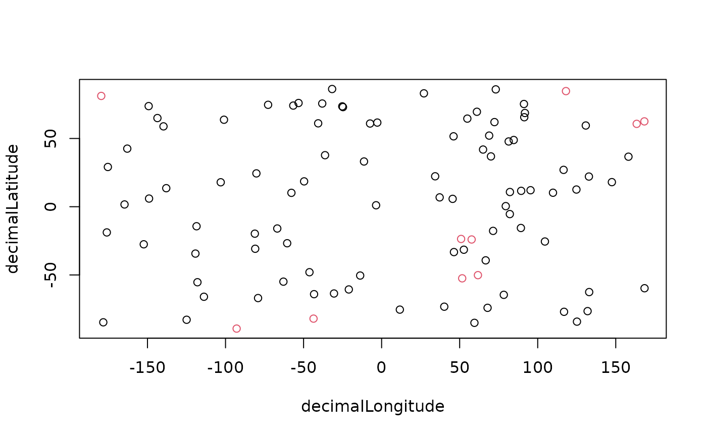

Removes out or flags records that are outliers in geographic space according
to the method defined via the method argument. Geographic outliers
often represent erroneous coordinates, for example due to data entry errors,
imprecise geo-references, individuals in horticulture/captivity.
cc_outl(
x,
lon = "decimalLongitude",
lat = "decimalLatitude",
species = "species",
method = "quantile",
mltpl = 5,
tdi = 1000,
value = "clean",
sampling_thresh = 0,
verbose = TRUE,
min_occs = 7,
thinning = FALSE,
thinning_res = 0.5
)data.frame. Containing geographical coordinates and species names.
character string. The column with the longitude coordinates. Default = “decimalLongitude”.
character string. The column with the latitude coordinates. Default = “decimalLatitude”.
character string. The column with the species name. Default = “species”.
character string. Defining the method for outlier selection. See details. One of “distance”, “quantile”, “mad”. Default = “quantile”.
numeric. The multiplier of the interquartile range
(method == 'quantile') or median absolute deviation (method ==
'mad')to identify outliers. See details. Default = 5.
numeric. The minimum absolute distance (method ==
'distance') of a record to all other records of a species to be identified
as outlier, in km. See details. Default = 1000.
character string. Defining the output value. See value.
numeric. Cut off threshold for the sampling
correction. Indicates the quantile of sampling in which outliers should be
ignored. For instance, if sampling_thresh == 0.25, records in the
25
(no sampling correction).
logical. If TRUE reports the name of the test and the number of records flagged.
Minimum number of geographically unique datapoints needed for
a species to be tested. This is necessary for reliable outlier estimation.
Species with fewer than min_occs records will not be tested and the output
value will be 'TRUE'. Default is to 7. If method == 'distance',
consider a lower threshold.
forces a raster approximation for the distance calculation. This is routinely used for species with more than 10,000 records for computational reasons, but can be enforced for smaller datasets, which is recommended when sampling is very uneven.
The resolution for the spatial thinning in decimal degrees. Default = 0.5.
Depending on the ‘value’ argument, either a data.frame
containing the records considered correct by the test (“clean”) or a logical vector (“flagged”), with TRUE = test passed and FALSE = test failed/potentially problematic . Default = “clean”.
The method for outlier identification depends on the method argument.
If “quantile”: a boxplot method is used and records are flagged as
outliers if their mean distance to all other records of the same
species is larger than mltpl * the interquartile range of the mean distance
of all records of this species. If “mad”: the median absolute
deviation is used. In this case a record is flagged as outlier, if the
mean distance to all other records of the same species is larger than
the median of the mean distance of all points plus/minus the mad of the mean
distances of all records of the species * mltpl. If “distance”:
records are flagged as outliers, if the minimum distance to the next
record of the species is > tdi. For species with records from > 10000
unique locations a random sample of 1000 records is used for the distance
matrix calculation. The test skips species with fewer than min_occs,
geographically unique records.
The likelihood of occurrence records being erroneous outliers is linked to the sampling effort in any given location. To account for this, the sampling_cor option fetches the number of occurrence records available from www.gbif.org, per country as a proxy of sampling effort. The outlier test (the mean distance) for each records is than weighted by the log transformed number of records per square kilometre in this country. See for https://besjournals.onlinelibrary.wiley.com/doi/full/10.1111/2041-210X.13152 an example and further explanation of the outlier test.
See https://ropensci.github.io/CoordinateCleaner/ for more details and tutorials.
x <- data.frame(species = letters[1:10],
decimalLongitude = runif(100, -180, 180),
decimalLatitude = runif(100, -90,90))
cc_outl(x)
#> Testing geographic outliers
#> Removed 0 records.
#> species decimalLongitude decimalLatitude
#> 1 a 18.189026 -39.978726
#> 2 b -54.656360 -36.202216
#> 3 c -156.253223 63.528190
#> 4 d -95.803494 -7.902699
#> 5 e -101.104763 -4.873340
#> 6 f 32.228557 3.974280
#> 7 g -85.162161 12.036676
#> 8 h 155.246984 43.807549
#> 9 i 83.207938 49.893827
#> 10 j 112.500407 35.550888
#> 11 a 130.212318 -75.178449
#> 12 b 174.122236 55.063413
#> 13 c 17.669175 -80.699243
#> 14 d 127.645363 -10.215310
#> 15 e -160.100984 -71.187392
#> 16 f -70.587290 -35.541500
#> 17 g -59.798757 -30.738658
#> 18 h -47.489845 84.848384
#> 19 i 15.770127 49.672509
#> 20 j 128.757791 -33.294026
#> 21 a 50.841438 -6.126188
#> 22 b -7.937704 11.273542
#> 23 c 1.140441 -25.419106
#> 24 d 131.170767 -53.193986
#> 25 e 100.130317 -44.775868
#> 26 f 98.847097 48.409163
#> 27 g -125.298118 79.156425
#> 28 h -113.224355 -51.901299
#> 29 i 82.962649 6.447325
#> 30 j -101.313446 -88.496877
#> 31 a -20.221670 50.565830
#> 32 b 175.148328 -31.646803
#> 33 c 122.511508 46.322768
#> 34 d 6.471159 23.658230
#> 35 e -67.840136 81.016399
#> 36 f -107.468031 -84.425087
#> 37 g -41.981937 -18.460422
#> 38 h -38.524780 -33.310395
#> 39 i 98.279433 71.460395
#> 40 j -60.652873 -49.605657
#> 41 a -155.410817 -69.069044
#> 42 b 130.609437 -70.713695
#> 43 c 32.967244 31.596477
#> 44 d -173.043662 -38.819448
#> 45 e 22.090094 -86.953989
#> 46 f 42.013980 7.825242
#> 47 g -37.119729 5.888189
#> 48 h 171.778260 61.298051
#> 49 i -35.220172 27.954009
#> 50 j 44.972089 14.200697
#> 51 a -158.786045 10.647079
#> 52 b 34.723095 -68.040345
#> 53 c 177.938035 -12.830356
#> 54 d -127.799652 17.617500
#> 55 e -61.235608 -55.431353
#> 56 f -31.434814 56.735498
#> 57 g 140.127544 -4.989401
#> 58 h 21.694734 -2.224571
#> 59 i -118.786582 39.471465
#> 60 j -98.923373 28.341323
#> 61 a -172.726090 -27.291279
#> 62 b -26.893499 -29.242036
#> 63 c 124.824682 22.743450
#> 64 d -151.597641 -54.019362
#> 65 e 6.728752 11.843657
#> 66 f 175.225349 -21.215000
#> 67 g -13.933024 2.067070
#> 68 h 74.243107 25.584248
#> 69 i 149.178649 -35.591533
#> 70 j -166.086683 -17.177926
#> 71 a 36.640590 29.934498
#> 72 b -69.297042 -11.885749
#> 73 c -94.834393 61.809295
#> 74 d 118.544535 -53.424410
#> 75 e 105.008364 56.288142
#> 76 f 167.483273 40.286257
#> 77 g -158.196630 -74.366950
#> 78 h -73.597971 -34.793221
#> 79 i -100.241233 56.161954
#> 80 j 35.959975 50.693929
#> 81 a 156.319212 14.846537
#> 82 b -2.982710 27.739878
#> 83 c 64.686969 52.112043
#> 84 d 58.663022 -61.980027
#> 85 e 65.650649 64.150165
#> 86 f 74.451093 10.317639
#> 87 g -41.487864 37.417220
#> 88 h -156.729272 -2.381398
#> 89 i -83.356198 67.148259
#> 90 j -91.895614 23.375829
#> 91 a 87.450789 25.155049
#> 92 b 18.271416 -30.334232
#> 93 c 73.051897 -6.628694
#> 94 d -53.726989 70.648554
#> 95 e -167.184091 -30.870596
#> 96 f -72.480614 28.702264
#> 97 g 147.416977 42.270527
#> 98 h 154.982956 25.188157
#> 99 i -156.225186 17.663941
#> 100 j -132.033363 -33.534914
cc_outl(x, method = "quantile", value = "flagged")
#> Testing geographic outliers
#> Flagged 0 records.
#> [1] TRUE TRUE TRUE TRUE TRUE TRUE TRUE TRUE TRUE TRUE TRUE TRUE TRUE TRUE TRUE
#> [16] TRUE TRUE TRUE TRUE TRUE TRUE TRUE TRUE TRUE TRUE TRUE TRUE TRUE TRUE TRUE
#> [31] TRUE TRUE TRUE TRUE TRUE TRUE TRUE TRUE TRUE TRUE TRUE TRUE TRUE TRUE TRUE
#> [46] TRUE TRUE TRUE TRUE TRUE TRUE TRUE TRUE TRUE TRUE TRUE TRUE TRUE TRUE TRUE
#> [61] TRUE TRUE TRUE TRUE TRUE TRUE TRUE TRUE TRUE TRUE TRUE TRUE TRUE TRUE TRUE
#> [76] TRUE TRUE TRUE TRUE TRUE TRUE TRUE TRUE TRUE TRUE TRUE TRUE TRUE TRUE TRUE
#> [91] TRUE TRUE TRUE TRUE TRUE TRUE TRUE TRUE TRUE TRUE
cc_outl(x, method = "distance", value = "flagged", tdi = 10000)
#> Testing geographic outliers
#> Flagged 0 records.
#> [1] TRUE TRUE TRUE TRUE TRUE TRUE TRUE TRUE TRUE TRUE TRUE TRUE TRUE TRUE TRUE
#> [16] TRUE TRUE TRUE TRUE TRUE TRUE TRUE TRUE TRUE TRUE TRUE TRUE TRUE TRUE TRUE
#> [31] TRUE TRUE TRUE TRUE TRUE TRUE TRUE TRUE TRUE TRUE TRUE TRUE TRUE TRUE TRUE
#> [46] TRUE TRUE TRUE TRUE TRUE TRUE TRUE TRUE TRUE TRUE TRUE TRUE TRUE TRUE TRUE
#> [61] TRUE TRUE TRUE TRUE TRUE TRUE TRUE TRUE TRUE TRUE TRUE TRUE TRUE TRUE TRUE
#> [76] TRUE TRUE TRUE TRUE TRUE TRUE TRUE TRUE TRUE TRUE TRUE TRUE TRUE TRUE TRUE
#> [91] TRUE TRUE TRUE TRUE TRUE TRUE TRUE TRUE TRUE TRUE
cc_outl(x, method = "distance", value = "flagged", tdi = 1000)
#> Testing geographic outliers
#> Flagged 96 records.
#> [1] FALSE FALSE FALSE FALSE FALSE FALSE FALSE FALSE FALSE FALSE FALSE FALSE
#> [13] FALSE FALSE FALSE FALSE FALSE FALSE FALSE FALSE FALSE FALSE FALSE TRUE
#> [25] FALSE FALSE FALSE FALSE FALSE FALSE FALSE FALSE FALSE FALSE FALSE FALSE
#> [37] FALSE FALSE FALSE FALSE FALSE FALSE FALSE FALSE FALSE FALSE FALSE FALSE
#> [49] FALSE FALSE FALSE FALSE FALSE FALSE FALSE FALSE FALSE FALSE FALSE TRUE
#> [61] FALSE FALSE FALSE FALSE FALSE FALSE FALSE FALSE FALSE FALSE FALSE FALSE
#> [73] FALSE TRUE FALSE FALSE FALSE FALSE FALSE FALSE FALSE FALSE FALSE FALSE
#> [85] FALSE FALSE FALSE FALSE FALSE TRUE FALSE FALSE FALSE FALSE FALSE FALSE
#> [97] FALSE FALSE FALSE FALSE
plot(x[, -1], col = cc_outl(x, method = "distance", value = "flagged", tdi = 1000) + 1)
#> Testing geographic outliers
#> Flagged 96 records.
